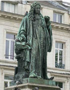

Batı’nın Fetih Travması ve Bizans’ın İcadı!
Konstantinopolis’in Müslüman Osmanlı tarafından fethinin üzerinden bir yüzyıl geçmişti ki...
1557 yılında, Alman hümanist ve tarih bilgini Hieronymus Wolf, Doğu Roma İmparatorluğu tarihi üzerinde yaptığı çalışmaları Corpus Historiae Byzantinae başlığı altında yayınladı.
Latince yazılıp basılan bu kitapla birlikte tarihte ilk kez, bir devlet yıkıldıktan 104 yıl sonra isim değiştiriyor ve 1123 yıl süreyle Doğu Roma diye bilinen, söylenen, yazılan emperyal devlete, “Bizans” adı veriliyordu.
Oysa 395 yılında Roma ikiye bölündükten ve Batı Roma 453’te yıkıldıktan sonradır ki salt Batılıların, “Bizden değildür!” diye “Doğu’daki...” ayracıyla andıkları devletin resmî, belgeli, mühürlü adı, Roma İmparatorluğu’ndan ibaretti!
Roma ordularının Anadolu’yu İsa doğmadan 189 yıl önce fethettiği düşünülürse; Küçük Asya diye anılan topraklardaki Roma varlığı, Konstantinopolis’in başkent ilan edildiği
MS 330 yılından başlatılan 1123 yıldan bile fazla, tam tamına 1642 yıllık bir tarihe yayılıyordu.
İşte bu olağanüstü uzunluktaki egemenlik sürecinde, Hieronymus Wolf’un icadına kadar kimsenin aklına, Doğu Roma’yı “Bizans” diye adlandırmak gelmemişti.
İmparatorluk halkı, yaşadığı devleti Yunanca “Basileia Rhomaion” (Roma İmparatorluğu) ya da kısaca “Rhomaion” (Roma) diye adlandırır, kendilerine de “Rhomaioi”, yani Romalı derlerdi. Zaten önce Araplar, sonra da Türklerin tarihten yavaş yavaş sildikleri, sonunda da Osmanlı’nın hemen tüm mülküne sahip olduğu eski imparatorluk ve tebaasına verdiği “Rumeli”, “Rum” adları da Roma’nın karşılığıydı.
Hieronymus Wolf/Devlet Kitaplığı, Augsburg
Şurası kuşkusuz ki Roma İmparatorluğu, gerek Batı, gerekse Doğu’da Antik Yunan topraklarına yayılmış, dolayısıyla Yunan uygarlığının da mirasçısıdır. Zaten tam da bu yüzden Roma kültürü, Greko Romen’dir.
Batı Roma, Hıristiyanlaşma sürecinde işte bu mirasın Greko yarısını uzun bir süre inkâr ve yeni uygarlığını Latince diliyle kurarken; Doğu Roma ise asimile etmediği ya da edemediği Yunanca konuşan halkın baskısıyla, Latince devlet dilini de bir süre sonra Yunancaya çevirmiştir.
Hieronymus Wolf, işte bu dil yarılmasından dalmış, Büyük Konstantin’in Konstantinopolis’i resmen başkent yaptığı 330’dan öteye Doğu’da süren Roma İmparatorluğu’nu, Roma uygarlığının devamı değil de “Ortaçağ Yunan uygarlığı” olduğu savıyla yeniden isimlendirmiştir. İmparatorluğa, Konstantinopolis’in üzerinde kurulduğu antik kalıt, küçümen yerleşke Bizantion’dan türettiği “Bizans” adını vermiştir.
Latin Katoliklerin, Hıristiyanlık âlemi liderliğini Grek Ortodokslardan çaldıktan sonra giriştikleri ikinci büyük sahtekârlık, bu yapay adlandırmadır.
Büyük bir bilgin olmasına karşın depresif bir kişiliği olup paranoya krizlerinden mustarip Hieronymus Wolf, elbette Katolik bir Alman’dır. Latince yazdığı Bizans tarihi, Katolik Roma Kilisesi’nin Ortodoks Roma’yı inkâr kurgusuna çok değerli ve kullanışlı bir katkıdır.
Ancak, Greko Romen bir uygarlık olduğu herkesçe kabul edilen Roma tarihini Latin ve Grek diye kesin hatlarla ayırmak öylesine uçuk bir projedir ki, Wolf’ün 1557’de ortaya attığı “Bizans tarihi” tezi, önceleri tutmaz.
Gerek tarihçiler, gerekse devletler ve halklar, Fatih’in başkentini alarak yıktığı devlete, bir yüzyıl daha Doğu Roma İmparatorluğu demeye devam ederler.
Ta ki 17. yüzyılda, Moliére’e Türkleri küçük düşüren bir oyun42 sipariş edecek kadar Osmanlı’dan nefret eden Fransa’nın “Güneş Kral” diye anılan güçlü hükümdarı On Dördüncü Louis, uyduruk adlandırmanın Avrupa’yı düşmanın eline düşen bir mirastan kesin çizgilerle ayıracağını anlayana kadar...
Mamamuşi Sarkozy (Mamamuşi karakteri, son olarak
eski cumhurbaşkanı Sarkozy’yle alay etmek için kullanıldı)
Kral On Dördüncü Louis, 1648 yılında Fransız Katolik Cizvit papazlarından oluşan bir kurulu, Hieronymus Wolf’ün Latince yazdığı “Bizans Tarihi”ni esas alan bir Bizans tarihçesi yazmakla görevlendirir. Katolik Cizvit Papaz Phillippe Labbé’nin başkanlığındaki kurulun sipariş tarihinden 1711’e kadar yayımladığı 24 ciltlik Latince tarih dizini, Corpus Scriptum Historiae Byzantinae” (Byzantine du Louvre) başlığı altında toplanır.
Du Cange senyörü diye de bilinen Fransız dil bilgini ve tarihçi Charles du Fresne’nin 1680 yılında bu kaynakçaya dayanarak yayımladığı Historia Byzantina kitabından sonra Montesquieu gibi önemli Fransız düşünür ve yazarları arasında yayılan “Bizans” sözcüğü, tüm dünya, hatta Romalılara “Rum” demeye devam eden Türkler tarafından bile benimsenir!

Charles du Fresne/Amiens, Fransa
17. yüzyıldan öteye Büyük Konstantin sonrası Doğu Roma İmparatorluğu, Batı Roma tarihinden kesin çizgilerle ayrılıp tamamen uyduruk bu adla anılmaya başlanır.
Böylece Müslüman Osmanlı, Doğu Roma ve ilk Hıristiyan başkentini değil, Bizans ve başkentini ele geçirmiş ve bu yeni yorum, Batı Avrupa’nın 1453’te yaşadığı fetih travmasına merhem olmaktadır!
Günümüzde Doğu’da 1123 yıl süreyle hüküm süren Roma Devleti’nin adını, geriye döndürülemeyecek kadar sağlam gasp eden tamamen uyduruk Bizans sözcüğü; tarihe doğru ya da yanlış, ancak yazanın yön verdiğine, en belirgin kanıtlardan biridir.
Oysa Doğu Roma’ya Bizans demek, her şeyden önce birleşik Roma İmparatorluğu’nun sonuncu büyük imparatoru, tarihteki en geniş sınırlarına hükmeden ve İstanbul’u “Nova Roma” adıyla başkenti yapan, sapına kadar Romalı Yüce Sezar, Flavius Valerius Aurelius Konstantinus’a hakarettir!
İngiltere’den Konstantinopolis’e, tüm Batı’nın da ilk Hıristiyan hükümdarı ve Papalık Devleti’nin kurucusu bildiği, Latin Roma Kilisesi’nin de Aziz mertebesine yükseltip, boş mezarını ve büstlerini kutsadığı Büyük Konstantin’e de Bizans İmparatoru mu denecektir?
Bu elbette mümkün değildir.
Yapılabilecek tek şey, Büyük Konstantin’in tarihteki yerini ve önemini, hiç olmazsa geniş halk yığınlarından, taban kitleden gizlemektir.
Doğu kültür mirasına, antik ve klasik çağlarına sırtına dönen Batı Hıristiyan devletleri, 17. yüzyıldan itibaren Büyük Konstantin’i toplumsal bellekten silmeye özen gösterdi. İlk ve orta öğretim tarih kitaplarına koymayacak kadar unuttu, unutturdu.
Katolik Kilisesi’nin Ortodoks Kilise’nin Hıristiyanlığın kültürel mirasındaki payını inkârı, gördüğünüz gibi dinden çok dil üzerinden yürütülen bir süreç olup sonuçta İncil’in Yunancasını kutsayanları Doğu, Latincesini kutsayanları Batı diye ayırmıştır.
Hıristiyanlık âleminin bölünmesine sonradan eklemlenen Protestanlık ve türevleri mezhepler, İncil’in müminler tarafından hangi dil konuşuluyorsa o dilde okutulmasını benimsemiş olsalar da... Latince alfabeyle yazdıkları için Batılı sayılmışlardır!
Bu da gerek konuşulan dili, gerekse yazıldığı alfabeyi; zaten jeopolitik üstünlük mücadelesinden başka bir şey olmayan din savaşlarının hem temel ögesi hem de sonuç olgusu kılmaktadır.
42 Tarihin en önemli tiyatro yazarlarından Moliére, Kral’ın emrini, 1670 yılında yazdığı Kibarlık Budalası (Le Bourgeois gentilhomme) oyununa, ikincil derecede Mamamuşi (Mamamouchi) karakterini ve maiyetini ekleyerek yerine getirmiştir. Piyeste, Müftüyle Müşir’in karışımı gülünç bir tınısı olan Mamamuşi ile Türk heyeti, kocaman sarıkları, tuhaf kılıklarıyla Osmanlı’yı alay konusu yapmaktadır.